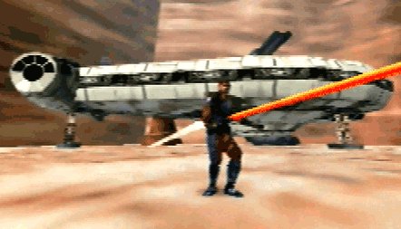
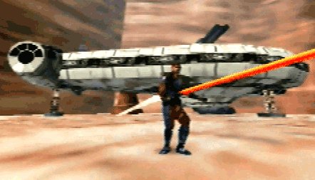

Star Wars: Shadows of the Empire is a video game developed and published by LucasArts. Primarily a third-person shooter, the game also utilizes multiple types of vehicular combat sequences. It was released for the Nintendo 64 on December 3, 1996, and a version for Windows 95 was released on September 17, 1997.